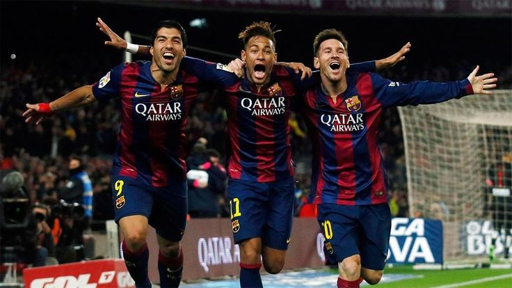

¿Por qué Neymar es un jugador tan importante en mi vida?
Neymar Jr. es un jugador único en este mundo, uno de los últimos grandes representantes del "Jogo Bonito" de Brasil. A lo largo de su carrera, logró ser parte del selecto grupo de los mejores futbolistas de su época, junto a Messi y Cristiano Ronaldo. Aunque puede que, dentro de 50 años, algunos lo vean como un jugador más dentro de la historia del fútbol, su impacto no debe subestimarse. Es cierto que nunca ganó un Balón de Oro, pero el simple hecho de haber jugado en la misma era que Messi y Cristiano es, por sí mismo, un logro impresionante.
Mi historia con Neymar comenzó en 2011, cuando yo tenía solo 8 años. Un día, mientras navegaba por YouTube, me encontré con un video que recopilaba las mejores jugadas de Neymar Jr. en el Santos. Fue tal la impresión que causó en mí, que inmediatamente tomé el teléfono fijo de mi casa y llamé a la casa de mi mejor amigo para contarle sobre el video y animarle a verlo. Ambos nos sentamos a mirarlo juntos y, desde ese momento, Neymar se convirtió en mi jugador favorito.
Neymar y la MSN
Dos años después, Neymar fichó por mi equipo, el FC Barcelona. Fueron 5 años maravillosos, durante los cuales pude disfrutar de la magia de este jugador. Junto a Messi y Suárez, formó el mejor tridente de la historia, conocido como el "MSN", un trío letal que dominó el fútbol mundial.
El "MSN" jugó juntos desde la temporada 2014-2015 hasta 2017, logrando 364 goles y 170 asistencias en total. En comparación con el "BBC" del Real Madrid (Bale, Benzema, Cristiano), que anotó 300 goles y 138 asistencias durante las mismas temporadas, el "MSN" superó ampliamente a su rival en cuanto a contribuciones directas al gol.
Luis Suárez llegó al Barcelona en 2014, tras una destacada temporada en el Liverpool, y rápidamente se adaptó al estilo de juego del equipo. Además de su capacidad goleadora, con 191 goles y 85 asistencias, Suárez destacó por su química tanto dentro como fuera del campo con Messi y Neymar. Los tres formaban una relación excelente, no solo como compañeros de equipo, sino como amigos, lo que se reflejaba en la fluidez de su juego. Esta buena relación fue clave para que el trío lograra tantas victorias, incluida la Champions League 2015 y varias Ligas Españolas.
Neymar: Un malabarista del balón
¿Por qué Neymar, estando Messi y Cristiano a su lado? La respuesta es simple: Neymar representa lo que muchos buscamos en el fútbol, lo que a veces nos hace disfrutar de este deporte más allá de los títulos y galardones. Messi y Cristiano representan el fútbol en su máxima expresión, con disciplina, trabajo duro y una perfección casi inalcanzable. Son los mejores en lo que hacen, y pocos errores se les pueden achacar. En cambio, Neymar es diversión pura. Sus trucos, regates y filigranas me hacían sonreír y levantarme de la silla. Neymar es el futbolista que nos hace soñar con cada jugada. Haciendo un simil Neymar JR representa la razón por la que un niño prefiere ir al circo o al zoo que ir al mejor de los museos (Cristiano y Messi) porque representa diversion y emoción en estado puro.
Aunque es probable que Neymar no sea recordado dentro de 50 años de la misma forma en que se recordarán a jugadores como Modric, Messi o Cristiano, que dejaron su huella a través de premios individuales como el Balón de Oro, su legado no debe ser olvidado. Probablemente, mis hijos y nietos me miren con esa cara que dice "¿Por qué habla de Neymar?", tal como yo miraba a mi padre cuando hablaba de jugadores como Santillana, Juanito o Benito, o como mi abuelo lo hacía al recordar a Pirri o Asensi. Estos jugadores marcaron su época, pero su imagen no ha perdurado en el tiempo debido a la falta de grandes galardones. Aun así, su relevancia en su momento fue incuestionable.
El día que Neymar se fue del Barça fue uno de los días más tristes de mi vida. Fue un día en el que lloré como un niño durante horas, fueron varios días los que necesité para asimilar lo que había pasado. Desde que se fue del Barça, fueron pocos los partidos que pude disfrutar de Neymar. Los que más recuerdo son el de la final de la Champions de 2020, donde el Bayern de Múnich ganó por 1 a 0 al PSG de Neymar. Y luego, la final de la Copa América de 2021, un partido que fue muy agridulce para mí, pues me alegraba de que Messi ganara la Copa América por fin, pero me sentía agridulce por la parte de Neymar. En ese partido vi a un Neymar diferente, vi a un Neymar remando contra viento y marea contra una Argentina que solo 2 años después saldría campeona del mundo.
Desde que Neymar se fué del Barcelona, sucarrera no volvió a ser la misma y empezó su decandencia. Su vida se vió envuelta en fiestas, mujeres y apuestas. Todo eso desenbocó en que muchos de sus buenos hábitos desaparecieran y por consiguiente en una gran cantidad de lesiones. La más notoria justo habiendo llegado al Al-Hilal rompiendose en Ligamento Cruzado Anterior. una lesión que le madnendría alejado de los terrenos de juego por más de 1 año. Neymar no volvió a ser el mismo jugador y por eso decidió volver a donde todo empezó, al Santos de Brasil. Desde ahí pretende volver a centrarse y seguramente con ilusión de querer volver a europa para la temporada 2025-26 para llegar lo mejor posible al Mundial de 2026. Seguramente su última oportunidad de poder conseguir ese título tan ansiado por todos los jugadores de fútbol.
El sucesor de Neymar
Y desde que Neymar se fue del Barça, ¿qué jugador me ha transmitido esas mismas emociones? Pues bien, después de 8 años sin disfrutar de ese fútbol tan parecido a un baile, es un jugador el que, por fin, me hace recordar a ese Neymar que tantas veces me hizo perderme en su fútbol. Y ese jugador es Lamine Yamal. Un jugador de apenas 17 años que ha roto varios récords por su corta edad y cuyo estilo hace recordar a Neymar por esas fintas, regates y estilo en general. Algo que no sorprende, ya que, como él mismo ha declarado en numerosas ocasiones, Neymar es el jugador que más ha marcado su estilo de juego. Y al igual que yo hacía en el recreo, celebra los goles como Neymar, se peina como Neymar, repite gestos y realmente tiene un estilo de juego muy parecido. Es cierto que no tiene tanta magia como Neymar, pero es el único jugador que me ha recordado a mi jugador favorito en 8 años.
Neymar es más que un simple jugador de fútbol. Para mí, representa la diversión y la pasión por el juego, dos cosas que me siguen inspirando hasta el día de hoy. Aunque algunos lo olviden o no reconozcan su grandeza en el futuro, siempre será el jugador que marcó mi infancia y mi forma de ver el fútbol.
 Neymar Jr. es un jugador único en este mundo, uno de los últimos grandes representantes del "Jogo Bonito" de Brasil. A lo largo de su carrera, logró ser parte del selecto grupo de los mejores futbolistas de su época, junto a Messi y Cristiano Ronaldo. Aunque puede que, dentro de 50 años, algunos lo vean como un jugador más dentro de la historia del fútbol, su impacto no debe subestimarse. Es cierto que nunca ganó un Balón de Oro, pero el simple hecho de haber jugado en la misma era que Messi y Cristiano es, por sí mismo, un logro impresionante.
Neymar Jr. es un jugador único en este mundo, uno de los últimos grandes representantes del "Jogo Bonito" de Brasil. A lo largo de su carrera, logró ser parte del selecto grupo de los mejores futbolistas de su época, junto a Messi y Cristiano Ronaldo. Aunque puede que, dentro de 50 años, algunos lo vean como un jugador más dentro de la historia del fútbol, su impacto no debe subestimarse. Es cierto que nunca ganó un Balón de Oro, pero el simple hecho de haber jugado en la misma era que Messi y Cristiano es, por sí mismo, un logro impresionante.